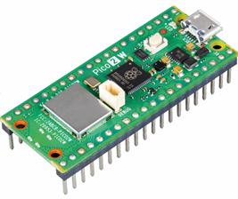
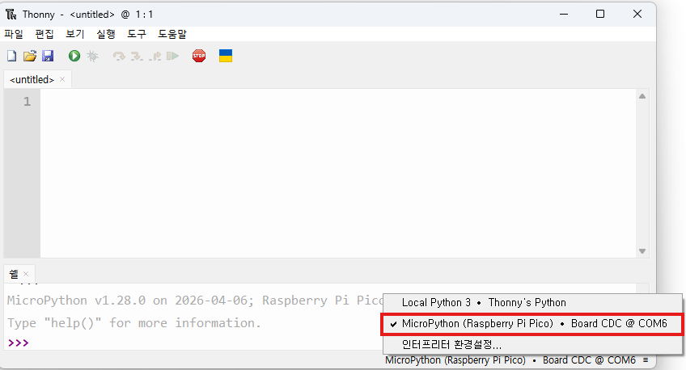

Hello, Pico!
손바닥 위의 컴퓨터를
깨우는 첫 시간
스마트워치, 무선 이어폰, 로봇 청소기, 전기밥솥 안에는 모두 작은 컴퓨터가 들어 있습니다. 오늘은 그 작은 컴퓨터에게 처음으로 명령을 내려 봅니다.
오늘 코드로 만들 동작입니다. 눌러서 미리 확인해 보세요.
피코는 어떤 컴퓨터일까
컴퓨터라고 하면 보통 모니터와 키보드가 달린 기계를 떠올립니다. 하지만 우리 주변 곳곳에는 '작은 컴퓨터'가 숨어 있어요. 엘리베이터 버튼을 누르면 층수를 기억하고, 자동문은 사람을 감지해 문을 엽니다. 이렇게 한 가지 용도로 쓰이는 작은 컴퓨터를 마이크로컨트롤러라고 부릅니다.
마이크로컨트롤러는 센서로 주변을 감지하고(입력), 정해진 규칙에 따라 판단하고(처리), 불을 켜거나 모터를 돌립니다(출력). 이 세 글자가 앞으로 우리가 만들 모든 장치의 뼈대입니다.

라즈베리파이 5 vs 라즈베리파이 피코 2 W
이름은 비슷하지만 역할이 다릅니다. 라즈베리파이는 운영체제를 올려 쓰는 작은 PC이고, 피코는 운영체제 없이 우리가 넣어 준 코드만 실행하는 칩 하나짜리 컴퓨터입니다.
| 구분 | 라즈베리파이 5 | 피코 2 W |
|---|---|---|
| 종류 | 싱글보드 컴퓨터 | 마이크로컨트롤러 보드 |
| 운영체제 | 리눅스 설치해 사용 | 없음. 전원을 켜면 코드가 바로 실행 |
| 화면·키보드 | 연결해 PC처럼 사용 | 없음 |
| 잘하는 일 | 여러 프로그램 동시 실행 | 한 가지 일을 24시간 꾸준히 |
| 전원 | 전용 어댑터 필요 | USB나 건전지로 가능 |
교실을 지키는 장치에게 필요한 건 '큰 힘'이 아니라 '꾸준함'입니다. 피코는 부팅 없이 전원을 켜자마자 일을 시작하고, 전기를 아주 조금 먹어 건전지로도 오래 버팁니다. 가격도 라즈베리파이 5의 10분의 1 수준이에요.
아두이노 우노 vs 피코 2 W
| 구분 | 아두이노 우노 | 피코 2 W |
|---|---|---|
| 언어 | C/C++ 기반 | 파이썬(마이크로파이썬) |
| 와이파이·블루투스 | 없음 | 보드에 기본 내장 |
| CPU 비트 | 8비트 | 32비트 |
| 처리 능력 | 16MHz, 1코어 | 150MHz, 2코어 |
이 수업에서는 파이썬으로 센서를 다루고, 무선 연결과 인공지능 프로젝트까지 확장하기 위해 피코를 골랐습니다.
보드 한가운데 네모난 검은 칩이 RP2350입니다. 피코가 '보드' 이름이라면 RP2350은 그 위에 올라간 '두뇌 칩'의 이름이에요. 사람으로 치면 피코가 몸, RP2350이 뇌인 셈입니다.
이 손톱만 한 칩 안에 계산 장치 두 개(150MHz 듀얼 코어)와 메모리(SRAM 520KB), 앞으로 쓸 ADC와 핀 제어 장치가 모두 들어 있습니다. 와이파이·블루투스는 그 옆 은색 덮개 안의 무선 칩이 따로 맡습니다.
오늘의 흐름과 준비물
오늘은 다섯 단계를 지납니다. 연결 → 토니 실행 → 코드 작성 → 저장 → 실행(▶). 이 흐름은 앞으로 모든 시간에 똑같이 반복되니, 오늘 확실히 익혀 둡시다.
- 토니(Thonny)를 설치한다
- 피코에 마이크로파이썬을 설치하고 연결한다
- 셸에서 첫 명령을 내려 본다
- 내장 LED를 켜고 끈다
- 나만의 깜빡임 패턴을 만든다
책상 위에 꺼내 둘 것
| 부품 | 확인할 점 |
|---|---|
| 피코 2 W | 핀헤더(다리)가 납땜되어 있는지 |
| USB 케이블 | 데이터 전송용인지. 충전 전용이면 인식되지 않습니다 |
| 노트북 | 설치 권한이 없어도 괜찮습니다 |
W는 Wireless, 즉 와이파이·블루투스가 들어 있다는 표시입니다. 우리 수업의 뒷부분 프로젝트가 전부 이 기능을 쓰기 때문에 반드시 W가 붙은 모델이어야 합니다.
H는 Header, 보드에 꽂는 가느다란 다리가 미리 납땜되어 있다는 뜻입니다. 다음 시간에 쓸 그로브 쉴드에 바로 끼우려면 필요하죠. 1세대에서는 'WH'라고 줄여 불렀지만, 피코 2부터는 구매 페이지에서 'with headers' 표기를 확인하세요.
활동 1. 토니 설치하고 실행하기
피코는 마이크로컨트롤러를 위한 파이썬인 마이크로파이썬(MicroPython)으로 프로그래밍합니다. 토니(Thonny)는 그 코드를 쓰고 실행 결과를 보는 프로그램이에요.
thonny.org에 접속해 내 컴퓨터 운영체제(윈도우/맥)에 맞는 설치 파일을 내려받습니다.
내려받은 파일을 실행하고 [Next] → [Install] → [Finish] 순으로 진행합니다. 바꿀 내용은 없습니다.
학교 컴퓨터에서 관리자 권한을 묻는다면 "Install for me only"(나만 사용)를 고르세요. 권한 없이도 설치됩니다.
토니를 실행하면 화면이 위아래 둘로 나뉘어 있습니다. 위쪽은 코드를 쓰는 편집 영역, 아래쪽은 결과와 오류 메시지가 나타나는 셸(Shell)입니다.

활동 2. 피코에 마이크로파이썬 설치하기
피코는 공장에서 나올 때 마이크로파이썬이 들어 있지 않습니다. 처음 한 번만 설치하면 됩니다.
보드의 흰색 BOOTSEL 버튼을 먼저 누른 상태에서 USB 케이블을 컴퓨터에 꽂습니다. 컴퓨터에 RP2350이라는 드라이브가 나타나면 버튼에서 손을 뗍니다.
USB 메모리를 꽂은 것처럼 보이면 성공이에요.
토니 오른쪽 아래 모서리의 인터프리터 선택 버튼을 클릭하고 [Install MicroPython…]을 누릅니다.
설치 창에서 Target volume이 RP2350으로 잡혔는지 확인하고, variant를 Raspberry Pi · Pico 2 W로 선택한 뒤 [Install]을 누릅니다. 10~30초 기다립니다.
오른쪽 아래에서 MicroPython (Raspberry Pi Pico)를 선택합니다. 셸에 이런 글자가 뜨면 성공입니다.
MicroPython v1.28.0 on 2026-04-06; Raspberry Pi Pico 2 W with RP2350
Type "help()" for more information.
>>>
한 번 설치해 두면 다음 시간부터는 케이블만 꽂고 바로 코딩할 수 있어요. 그리고 BOOTSEL은 펌웨어를 설치할 때만 씁니다. 평소에는 그냥 꽂으세요.
드라이브가 나타나지 않는다면 버튼을 누르는 타이밍을 확인하세요. 버튼을 먼저 누르고, 그 상태에서 USB를 연결해야 합니다.
첫 명령 내리기
셸의 >>> 옆에 아래 한 줄을 직접 타이핑하고 엔터를 누르세요.
print("안녕, 피코!")
화면에 안녕, 피코!가 나타납니다. 이 글자를 출력한 것은 여러분의 컴퓨터가 아니라 피코입니다. 셸에 적은 명령이 USB를 타고 피코로 건너가 실행되고, 그 결과가 다시 화면으로 돌아온 것이죠.
이름을 넣어 한 번 더 해 보세요. 지금 이 순간, 손바닥만 한 컴퓨터가 여러분의 말을 듣고 있습니다.
내장 LED 깜빡이기
피코 보드 위에는 작은 LED가 하나 붙어 있습니다. 이번에는 셸이 아니라 편집 영역에 코드를 적고, main.py로 피코에 저장한 뒤 초록색 실행 버튼(▶)을 누릅니다.
코드 1. LED 켜기
from machine import Pin # Pin 기능 가져오기 led = Pin("LED", Pin.OUT) # 내장 LED 준비 led.value(1) # 1 = 켜기, 0 = 끄기
machine은 핀, ADC, PWM처럼 하드웨어를 제어하는 라이브러리입니다. 마이크로파이썬에 기본으로 들어 있어 따로 설치할 필요가 없어요. Pin("LED", Pin.OUT)은 '내장 LED를 출력용으로 쓰겠다'는 뜻입니다.
이제 value(1)을 value(0)으로 바꿔 다시 실행해 보세요. 꺼집니다. 코드로 하드웨어를 제어한 첫 순간입니다.
셸에 적은 명령은 한 번 실행되고 사라집니다. 코드를 남기려면 편집 영역에 적고 저장해야 하죠. 저장할 때 '이 컴퓨터'가 아니라 'Raspberry Pi Pico'를 선택하면 코드가 피코 안으로 들어갑니다.
이때 파일 이름을 main.py로 지으면 특별한 일이 생겨요. 컴퓨터 없이 전원만 꽂아도 피코가 이 파일을 스스로 실행합니다. 건전지만 연결해도 동작하는 진짜 장치가 되는 거예요.
코드 2. LED 깜빡이기
켜기와 끄기 사이에 '기다리기'를 넣고, 그것을 계속 반복하면 LED가 깜빡입니다.
from machine import Pin import time led = Pin("LED", Pin.OUT) while True: led.value(1) time.sleep(0.5) # 0.5초 기다리기 led.value(0) time.sleep(0.5)
while True:는 '멈추라고 할 때까지 계속 반복'이라는 뜻입니다. 켜고, 0.5초 쉬고, 끄고, 0.5초 쉬고를 반복하니 LED가 1초에 한 번 깜빡입니다. 멈추려면 토니의 빨간 정지(STOP) 버튼을 누르세요.
time.sleep(0.5)이 없으면 어떻게 될까요? 너무 빨리 깜빡여서 사람 눈에는 그냥 켜져 있는 것처럼 보입니다. 지워 보고 직접 확인해 보세요.
while True: 아래 줄들은 반드시 스페이스 4칸만큼 들여 써야 합니다. 파이썬은 들여쓰기로 '어디까지가 반복할 부분인지'를 판단하기 때문이에요.
활동 3. 나만의 깜빡임 만들기
맨 위 시뮬레이터로 먼저 실험해 보고, 마음에 드는 패턴을 코드로 옮겨 보세요.
time.sleep의 숫자를 0.1로 줄이면 얼마나 빨라질까요? 2로 늘리면요? 눈으로 깜빡임을 셀 수 있는 가장 빠른 숫자는 몇일지 찾아보세요.
'짧게 세 번, 길게 한 번'처럼 리듬이 있는 깜빡임을 만들어 봅니다. 켜진 시간과 꺼진 시간을 다르게 주면 느낌이 달라집니다.
모스 부호의 SOS는 짧게 3번, 길게 3번, 짧게 3번입니다. 시뮬레이터의 [SOS] 버튼으로 리듬을 확인한 뒤 직접 만들어 보세요. 짧은 신호와 긴 신호의 길이 차이를 얼마로 해야 옆 사람이 알아볼 수 있을까요?
같은 줄을 아홉 번 복사해도 SOS는 만들어집니다. 하지만 코드가 길어지면 고치기 힘들어져요. 반복되는 부분을 짧게 줄일 방법이 없을지 고민해 보고, 막히면 옆 사람이나 AI에게 물어보세요.
막힐 때 보는 곳
| 이런 상황이면 | 이렇게 해 보세요 |
|---|---|
| RP2350 드라이브가 안 뜬다 | BOOTSEL을 먼저 누르고 그 상태로 USB를 꽂았는지 확인. 그래도 안 되면 데이터 전송용 케이블인지 확인 |
| 셸에 >>>가 없다 | 오른쪽 아래 인터프리터가 MicroPython (Raspberry Pi Pico)로 되어 있는지 확인. 빨간 정지 버튼을 한 번 누르면 돌아오기도 합니다 |
| SyntaxError | 괄호나 따옴표 짝이 안 맞거나, 콜론(:)을 빠뜨린 경우가 대부분 |
| LED가 켜진 채 안 깜빡인다 | time.sleep()이 빠졌을 가능성이 높습니다 |
| IndentationError | 들여쓰기 문제. while 아래 줄이 스페이스 4칸 들어가 있는지 확인 |
| NameError | 변수 이름을 잘못 적었을 가능성. led를 LED로 쓰지 않았는지 확인 |
| 코드를 고쳐도 예전 게 실행된다 | 저장을 안 했거나, 피코가 아니라 컴퓨터에 저장했을 수 있어요. 저장 위치를 다시 확인 |
| 멈추질 않는다 | 토니의 빨간 정지(STOP) 버튼 |
빨간 글씨가 나오면 마지막 줄부터 읽어 보세요. 에러 이름과 몇 번째 줄인지가 적혀 있습니다. 이 수업에서 여러분은 에러를 아주 많이 만나게 될 텐데, 그때마다 조금씩 더 잘 읽게 될 거예요.
점검하기
피코와 라즈베리파이 5의 가장 큰 차이는 무엇인가요?
led.value(1)과 led.value(0)의 차이는?
Pin("LED", Pin.OUT)에서 OUT은 무슨 뜻인가요?
코드를 main.py라는 이름으로 피코에 저장하면 무엇이 달라지나요?
LED를 2초에 한 번 깜빡이게 하려면 코드를 어떻게 바꿀까요?
time.sleep(0.5) 두 곳을 모두 time.sleep(1)로 바꿉니다. 켜진 시간 1초 + 꺼진 시간 1초 = 한 주기 2초입니다.BOOTSEL 버튼은 언제 쓰나요?
오늘 한 일
다음 시간 예고
다음 시간에는 그로브 쉴드를 끼우고 바깥 LED와 버튼을 연결합니다. 오늘은 피코가 신호를 내보내기만 했다면, 다음엔 신호를 받아들이는 입력까지 다뤄요.
버튼을 누르면 불이 켜지는 장치. 그게 모든 센서 프로젝트의 출발점입니다.